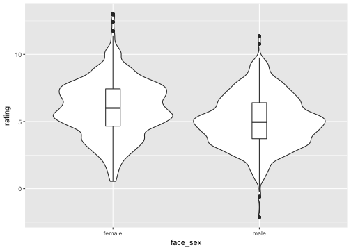

How you choose to code categorical variables changes how you can interpret the intercept and effects of those variables. My favourite tutorial on coding schemes explains things in detail. I'm just adding some concrete examples below.
First, I simulated a data frame of 100 raters rating 100 faces each. Male faces get ratings with a mean of 5 and SD = 2; female faces get ratings with a mean of 6 and SD = 2. (I know, ratings are usually ordinal integers, but let's pretend we used something like a slider.)
suppressMessages( library(tidyverse) ) set.seed(444) # for reproducibility df <- data.frame( face_id = rep(1:100, each=100), rater_id = rep(1:100, times=100), face_sex = rep(c("male", "female"), each=500), rating = c(rnorm(500, 5, 2), rnorm(500, 6, 2)) ) df %>% group_by(face_sex) %>% summarise(mean = mean(rating), sd = sd(rating))
## # A tibble: 2 × 3 ## face_sex mean sd ## <fctr> <dbl> <dbl> ## 1 female 5.974585 2.098027 ## 2 male 5.042843 1.944579
df %>% ggplot(aes(face_sex, rating)) + geom_violin() + geom_boxplot(width=0.1)

Recode face sex using treatment, sum, or effect coding.
df2 <- df %>% mutate( face_sex.tr = ifelse(face_sex=="female", 0, 1), face_sex.sum = ifelse(face_sex=="female", -1, 1), face_sex.e = ifelse(face_sex=="female", -0.5, +0.5) )
Now we analyse the data using each of the 4 styles of coding. I'm just going to show the table of fixed effects.
suppressMessages( library(lmerTest) ) m1 <- lmer(rating ~ face_sex + (1 | face_id) + (1 | rater_id), df2) sum1 <- summary(m1) sum1$coefficients
## Estimate Std. Error df t value Pr(>|t|) ## (Intercept) 5.9745855 0.06316784 120.7318 94.58272 0 ## face_sexmale -0.9317424 0.03883879 9899.0006 -23.98999 0
Note that the intercept coefficient is equal to the female mean and the "effect" of face sex is how much less the male mean is.
m.tr <- lmer(rating ~ face_sex.tr + (1 | face_id) + (1 | rater_id), df2) sum.tr <- summary(m.tr) sum.tr$coefficients
## Estimate Std. Error df t value Pr(>|t|) ## (Intercept) 5.9745855 0.06316784 120.7318 94.58272 0 ## face_sex.tr -0.9317424 0.03883879 9899.0006 -23.98999 0
Treatment coding is the same as categorical coding, but gives you more control over what the reference category is.
m.sum <- lmer(rating ~ face_sex.sum + (1 | face_id) + (1 | rater_id), df2) sum.sum <- summary(m.sum) sum.sum$coefficients
## Estimate Std. Error df t value Pr(>|t|) ## (Intercept) 5.5087143 0.06010875 99.0002 91.64579 0 ## face_sex.sum -0.4658712 0.01941940 9899.0000 -23.98999 0
With sum coding, the intercept coefficient is equal to the overall mean (ignoring face sex) and the "effect" of face sex is how much above and below that each of the two face sexes differ from the mean.
m.e <- lmer(rating ~ face_sex.e + (1 | face_id) + (1 | rater_id), df2) sum.e <- summary(m.e) sum.e$coefficients
## Estimate Std. Error df t value Pr(>|t|) ## (Intercept) 5.5087143 0.06010876 99.00001 91.64579 0 ## face_sex.e -0.9317424 0.03883879 9898.99912 -23.98999 0
With effect coding, the intercept coefficient is the same as sum coding and the "effect" of face sex is how much the two face sexes differ from each other. Note that this coefficient is double that from the sum coding.